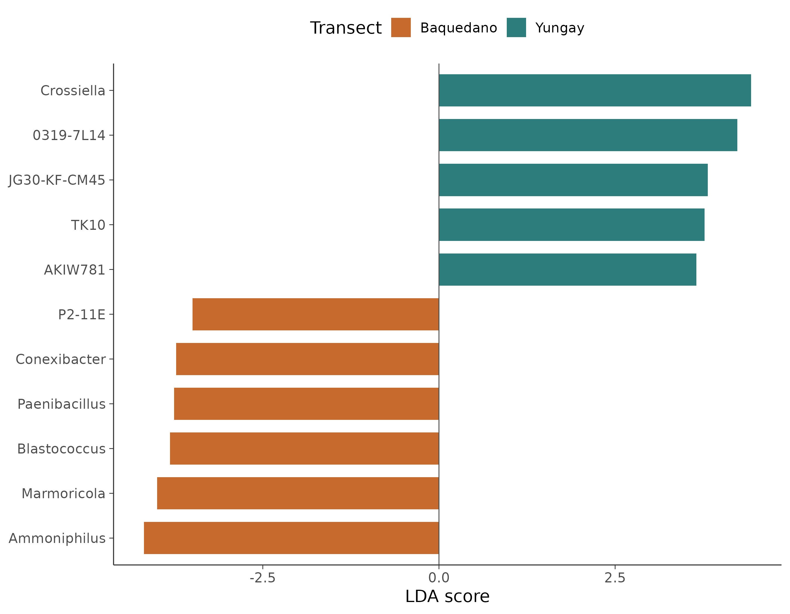
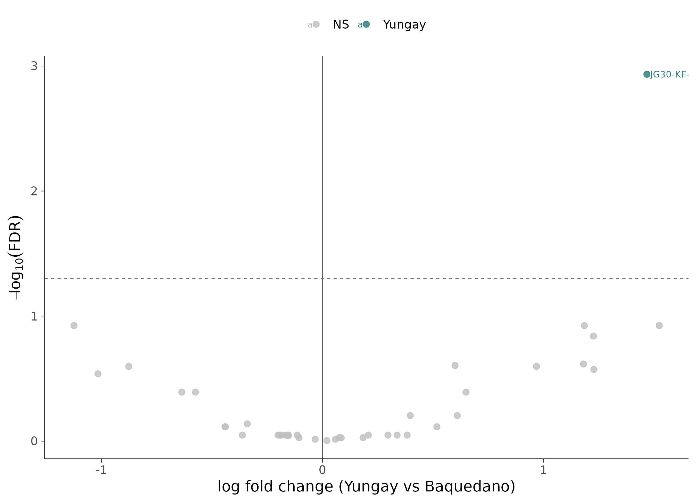

16S 微生物组最佳实践系列（七）：差异物种分析——谁真的变了
📋 教程信息 - GitHub：petemeng/16S-Tutorial（完整代码与环境文件） - 数据来源：Atacama soils 双端数据集（54 个样本，249 个属水平特征） - 预计阅读：35 分钟 | 实操：20 分钟 - 难度：⭐⭐⭐⭐（5 星制） - 前置知识：完成本系列第 6 篇，
results/下已有phyloseq_object.rds
本篇目标
上一篇我们已经看到了两条 transect 的组成差异，但柱状图和热图只能告诉你“看起来不一样”。真正写结果时，你还需要回答：
哪些 genus 的变化是统计学显著的？哪些只是肉眼看着明显，但一做检验就站不住？
这一篇我们用两条路线回答这个问题：
- LEfSe：偏“筛选标志物”的思路，突出效应量
- ANCOM-BC：偏“组成性校正”的思路，统计更严格
读完这一篇，你会：
- 理解组成性问题为什么让微生物组差异分析比 RNA-seq 更麻烦
- 用 LEfSe 找到 transect 之间的候选 biomarker
- 用 ANCOM-BC 做更保守的差异丰度检验
- 学会把两种方法交叉验证，而不是只信一种
- 拿到后面随机森林和整合分析会反复出现的核心 genus
为什么微生物组差异分析特别难
16S 数据本质上是组成性数据。每个样本的总和被压缩到了 100%，所以一个类群比例升高，不一定意味着它的绝对数量真的升高，也可能只是别的类群降下去了。
这会直接影响差异分析：
LEfSe 的优点是直观，容易做出条形图，也容易挑出生物学上好讲的 marker；缺点是不显式校正组成性偏差。
ANCOM-BC 的优点是会在模型里显式处理 bias correction，结论通常更保守；缺点是结果有时比 LEfSe 少得多，看起来“不够热闹”。
这两种方法不冲突。真正稳妥的做法，是把它们当作互相校验。
准备工作
我们这次不再做 gut vs tongue，而是直接沿用 Atacama 主线：比较 Baquedano 和 Yungay 两条 transect。
# ============================================================
# 文件：analysis/07_differential_abundance.R
# 功能：LEfSe + ANCOM-BC 差异丰度分析
# ============================================================
source("/media/desk16/tly9658/16s-atacama-tutorial/analysis/common_16s.R")
suppressPackageStartupMessages({
library(microeco)
library(phyloseq)
library(readr)
library(dplyr)
library(tibble)
library(stringr)
library(tidyr)
})
ps <- readRDS(file.path(ATACAMA_ROOT, "results", "phyloseq_object.rds"))
ps <- prune_taxa(taxa_sums(ps) > 0, ps)
ps_genus <- tax_glom(ps, taxrank = "Genus", NArm = FALSE)
sample_df <- sample_data(ps_genus) %>%
data.frame(check.names = FALSE) %>%
rownames_to_column("SampleID") %>%
mutate(
transect_name = factor(transect_name, levels = c("Baquedano", "Yungay")),
vegetation = factor(vegetation, levels = c("no", "yes"))
)
cat("数据概况：\n")
cat(" 样本数:", nrow(sample_df), "\n")
cat(" 属水平特征数:", ntaxa(ps_genus), "\n")
cat(" 分组:\n")
print(table(sample_df$transect_name))
📊 输出：
数据概况：
样本数: 54
属水平特征数: 249
分组:
Baquedano Yungay
25 29
这比之前常见的教学数据更像真实项目：样本量不算很大，但也不是只有十来个样本的极简演示。
方法一：LEfSe
先看 LEfSe。它更适合做“候选 biomarker 筛选”，尤其适合先快速看哪些类群的效应量最大。
# ============================================================
# Step 1: LEfSe
# ============================================================
normalize_genus <- function(x) {
vapply(x, function(item) {
parts <- str_split(item, "[;|]")[[1]]
parts <- str_trim(parts)
parts <- parts[parts != ""]
genus <- dplyr::last(parts) %||% item
genus <- str_replace(genus, "^g__", "")
genus <- str_trim(genus)
if (is.na(genus) || genus == "" || genus %in% c("uncultured", "__", "NA")) {
"Unclassified"
} else {
genus
}
}, character(1))
}
otu <- as(otu_table(ps_genus), "matrix")
if (!taxa_are_rows(ps_genus)) otu <- t(otu)
tax_df <- tax_table(ps_genus) %>%
data.frame(check.names = FALSE) %>%
rownames_to_column("FeatureID") %>%
mutate(
Family = ifelse(is.na(Family) | Family == "", "Family_unclassified", Family),
Genus = ifelse(is.na(Genus) | Genus == "", paste0("Unclassified_", Family), Genus)
) %>%
column_to_rownames("FeatureID")
mt <- microtable$new(
otu_table = as.data.frame(otu, check.names = FALSE),
sample_table = sample_df %>% column_to_rownames("SampleID"),
tax_table = tax_df
)
mt$cal_abund(rel = TRUE)
lefse <- trans_diff$new(
dataset = mt,
method = "lefse",
group = "transect_name",
taxa_level = "Genus",
filter_thres = 0.0005,
alpha = 0.05,
p_adjust_method = "none",
lefse_norm = 1e6
)
lefse_df <- lefse$res_diff %>%
as_tibble() %>%
mutate(
Genus = normalize_genus(Taxa),
P.adj = as.numeric(P.adj),
LDA = as.numeric(LDA)
) %>%
filter(!str_detect(Genus, "^Unclassified")) %>%
arrange(desc(abs(LDA)))
cat("LEfSe 结果：\n")
cat(" 显著差异属数:", sum(lefse_df$P.adj < 0.05, na.rm = TRUE), "\n")
print(
lefse_df %>%
select(Genus, Group, LDA, P.adj) %>%
slice_head(n = 11)
)
📊 输出：
LEfSe 结果：
显著差异属数: 11
Genus Group LDA P.adj
1 Crossiella Yungay 4.430 0.01710454
2 0319-7L14 Yungay 4.233 0.03539762
3 Ammoniphilus Baquedano 4.187 0.01850262
4 Marmoricola Baquedano 4.001 0.00567601
5 Blastococcus Baquedano 3.816 0.02126569
6 JG30-KF-CM45 Yungay 3.815 0.00083234
7 TK10 Yungay 3.770 0.00783051
8 Paenibacillus Baquedano 3.760 0.00455994
9 Conexibacter Baquedano 3.728 0.02126569
10 AKIW781 Yungay 3.653 0.03108692
11 P2-11E Baquedano 3.498 0.03359337
这 11 个 genus 很有代表性。Yungay 一侧更突出的包括 Crossiella、0319-7L14、JG30-KF-CM45、TK10；Baquedano 一侧更突出的包括 Ammoniphilus、Marmoricola、Paenibacillus、Conexibacter。
top_lefse <- lefse_df %>%
filter(P.adj < 0.05) %>%
slice_head(n = 20) %>%
mutate(LDA_signed = ifelse(Group == "Baquedano", -LDA, LDA))
p_lefse <- ggplot(
top_lefse,
aes(x = LDA_signed, y = reorder(Genus, LDA_signed), fill = Group)
) +
geom_col(width = 0.72) +
geom_vline(xintercept = 0, linewidth = 0.35, color = "grey30") +
scale_fill_manual(values = c("Baquedano" = "#C66B2D", "Yungay" = "#2D7D7D")) +
labs(x = "LDA score", y = NULL, fill = "Transect") +
theme_songlab() +
theme(legend.position = "top")
save_plot_dual(p_lefse, "ch07_lefse_barplot", width = 9, height = 7)

图 1：LEfSe 条形图。 左侧是 Baquedano 富集 genus，右侧是 Yungay 富集 genus。这里最值得注意的是：Yungay 侧的 JG30-KF-CM45、0319-7L14，以及 Baquedano 侧的 Paenibacillus、Ammoniphilus，后面还会在随机森林里继续出现。
方法二：ANCOM-BC
ANCOM-BC 更保守，也更接近“正式统计检验”的逻辑。这里我们直接调用 QIIME2 自带的 qiime composition ancombc，避开了 R 侧旧依赖链的问题。
# ============================================================
# Step 2: ANCOM-BC
# ============================================================
run_qiime <- function(args) {
status <- system2(
"conda",
c("run", "-n", "qiime2-amplicon-2024.5", "qiime", args)
)
if (!identical(status, 0L)) {
stop("QIIME2 command failed: qiime ", paste(args, collapse = " "))
}
}
metadata_qiime <- sample_df %>%
transmute(
`sample-id` = SampleID,
transect_name = as.character(transect_name),
site_name = site_name,
vegetation = as.character(vegetation),
depth = depth,
ph = ph,
toc = toc,
ec = ec
)
metadata_path <- file.path(ATACAMA_ROOT, "results", "ancombc_metadata.tsv")
write_tsv(metadata_qiime, metadata_path)
collapsed_table <- file.path(ATACAMA_ROOT, "results", "table-filtered-genus.qza")
ancombc_qza <- file.path(ATACAMA_ROOT, "results", "ancombc-genus.qza")
ancombc_export <- file.path(ATACAMA_ROOT, "results", "ancombc-genus-export")
run_qiime(c(
"taxa", "collapse",
"--i-table", file.path(ATACAMA_ROOT, "results", "table-filtered.qza"),
"--i-taxonomy", file.path(ATACAMA_ROOT, "results", "taxonomy.qza"),
"--p-level", "6",
"--o-collapsed-table", collapsed_table
))
run_qiime(c(
"composition", "ancombc",
"--i-table", collapsed_table,
"--m-metadata-file", metadata_path,
"--p-formula", "transect_name",
"--p-reference-levels", "transect_name::Baquedano",
"--p-p-adj-method", "BH",
"--p-prv-cut", "0.1",
"--p-conserve",
"--o-differentials", ancombc_qza
))
run_qiime(c(
"tools", "export",
"--input-path", ancombc_qza,
"--output-path", ancombc_export
))
lfc_raw <- read_csv(file.path(ancombc_export, "lfc_slice.csv"), show_col_types = FALSE)
q_raw <- read_csv(file.path(ancombc_export, "q_val_slice.csv"), show_col_types = FALSE)
coef_col <- grep("^transect_name", colnames(lfc_raw), value = TRUE)[1]
ancombc_df <- lfc_raw %>%
select(id, logFC = all_of(coef_col)) %>%
left_join(q_raw %>% select(id, Q = all_of(coef_col)), by = "id") %>%
transmute(
FeatureID = id,
Genus = normalize_genus(id),
logFC = as.numeric(logFC),
Q = as.numeric(Q),
diff = Q < 0.05,
Group = ifelse(logFC > 0, "Yungay", "Baquedano")
) %>%
filter(!is.na(logFC), !str_detect(Genus, "^Unclassified")) %>%
arrange(Q, desc(abs(logFC)))
cat("ANCOM-BC 结果：\n")
cat(" 显著差异属数:", sum(ancombc_df$Q < 0.05 & ancombc_df$diff, na.rm = TRUE), "\n")
print(
ancombc_df %>%
filter(Q < 0.05, diff) %>%
select(Genus, Group, logFC, Q)
)
📊 输出：
ANCOM-BC 结果：
显著差异属数: 1
Genus Group logFC Q
1 JG30-KF-CM45 Yungay 1.46773 0.00116415
这就是 ATACAMA 这套数据很有意思的地方：LEfSe 能给出一串候选 biomarker，但 ANCOM-BC 真正留下来的只有一个属：JG30-KF-CM45。
p_ancombc <- ancombc_df %>%
mutate(
Significant = case_when(
Q < 0.05 & logFC > 0 ~ "Yungay",
Q < 0.05 & logFC < 0 ~ "Baquedano",
TRUE ~ "NS"
),
label = ifelse(row_number() <= 12 & Q < 0.05, Genus, "")
) %>%
ggplot(aes(x = logFC, y = -log10(pmax(Q, 1e-300)), color = Significant)) +
geom_point(size = 2.4, alpha = 0.82) +
geom_vline(xintercept = 0, linewidth = 0.35, color = "grey35") +
geom_hline(yintercept = -log10(0.05), linewidth = 0.35, linetype = "dashed", color = "grey45") +
geom_text(aes(label = label), hjust = -0.05, size = 3, check_overlap = TRUE, na.rm = TRUE) +
scale_color_manual(
values = c("Baquedano" = "#C66B2D", "Yungay" = "#2D7D7D", "NS" = "grey75")
) +
labs(x = "log fold change (Yungay vs Baquedano)", y = expression(-log[10](FDR)), color = NULL) +
theme_songlab() +
theme(legend.position = "top")
save_plot_dual(p_ancombc, "ch07_ancombc_volcano", width = 9, height = 6.5)

图 2：ANCOM-BC 火山图。 满足 FDR < 0.05 的只有 JG30-KF-CM45，而且方向明确偏向 Yungay。这种“只剩一个非常稳的信号”的结果，在真实环境数据里并不少见。
两种方法放在一起看
最稳妥的做法不是问“到底该信 LEfSe 还是 ANCOM-BC”，而是问：两种方法重叠的核心信号是谁？
# ============================================================
# Step 3: 两种方法交叉验证
# ============================================================
consensus <- lefse_df %>%
filter(P.adj < 0.05) %>%
select(Genus, LEfSe_group = Group, LDA) %>%
inner_join(
ancombc_df %>%
filter(Q < 0.05, diff) %>%
select(Genus, ANCOMBC_group = Group, logFC, Q),
by = "Genus"
) %>%
mutate(Agreement = LEfSe_group == ANCOMBC_group)
write_tsv(consensus, file.path(ATACAMA_ROOT, "results", "consensus_diff_genera.tsv"))
cat("共识差异属数:", nrow(consensus), "\n")
print(consensus)
📊 输出：
共识差异属数: 1
Genus LEfSe_group LDA ANCOMBC_group logFC Q Agreement
1 JG30-KF-CM45 Yungay 3.814735 Yungay 1.46773 0.00116415 TRUE
这一步非常关键。它说明：
JG30-KF-CM45 是这套数据里最稳的 transect biomarker。 它不仅在 LEfSe 里有较高的 LDA score，在 ANCOM-BC 里也能通过更严格的 FDR 控制。
其他那些只出现在 LEfSe 但没有通过 ANCOM-BC 的 genus，并不一定是错的，但证据强度显然弱一档。后面如果它们又出现在随机森林和网络分析里，可信度才会进一步提高。
结果怎么写进正文
如果你要把这一章结果写进论文或报告，最稳妥的表述通常是：
第一层：LEfSe 给出候选 marker 列表，用于展示组间效应量最大的类群。
第二层：ANCOM-BC 给出更保守的统计结果，说明在校正组成性偏差后，最稳定的差异属是 JG30-KF-CM45。
第三层：把两者交集当作“高置信度 biomarker”，不要把 LEfSe 的整串列表都当成同等强度的证据。
这比“某方法跑出多少个显著属，我就全都写进讨论”要稳健得多。
本篇小结
这一篇我们用两种方法做了 Atacama transect 差异丰度分析。
结果非常清楚：
LEfSe 给出 11 个候选 genus，说明两条 transect 在多个类群上存在可见的组成差异。
ANCOM-BC 只保留 1 个显著属：JG30-KF-CM45。 这提示真实环境数据里的稳定差异往往没有教学示例那么夸张。
两种方法的交集只有 1 个 genus，但这恰恰是最值得信的结果。
下一篇预告
差异丰度告诉我们“谁变了”，但审稿人经常会追问另一件事：这些变化意味着什么功能差异？
下一篇我们把 ASV 表和代表序列送进 PICRUSt2，看看不同 transect 的群落在预测功能潜力上有什么区别，以及这类预测结果到底能信到什么程度。
📌 本篇图和表都来自服务器实际运行结果，可在 GitHub 仓库直接复现。
本系列导航
| 篇目 | 主题 | 状态 |
|---|---|---|
| 第 1 篇 | 只测一个基因，怎么就能知道有哪些细菌 | ✅ 已发布 |
| 第 2 篇 | 搭建环境，拿到数据 | ✅ 已发布 |
| 第 3 篇 | DADA2 去噪——从噪声中找到真实序列 | ✅ 已发布 |
| 第 4 篇 | 物种注释——给每个 ASV 一个名字 | ✅ 已发布 |
| 第 5 篇 | 多样性分析——有多“丰富”，彼此有多“不同” | ✅ 已发布 |
| 第 6 篇 | 物种组成可视化——谁占了多少 | ✅ 已发布 |
| 第 7 篇 | 差异物种分析——谁真的变了 | 📍 本篇 |
| 第 8 篇 | PICRUSt2 功能预测 | ✅ 已发布 |
| 第 9 篇 | 共现网络分析 | ✅ 已发布 |
| 第 10 篇 | 随机森林 biomarker 筛选 | ✅ 已发布 |
| 第 11 篇 | SourceTracker 溯源分析 | ✅ 已发布 |
| 第 12 篇 | 微生物组-代谢组联合分析 | ✅ 已发布 |
| 第 13 篇 | 发表级图表与结果整合 | ✅ 已发布 |